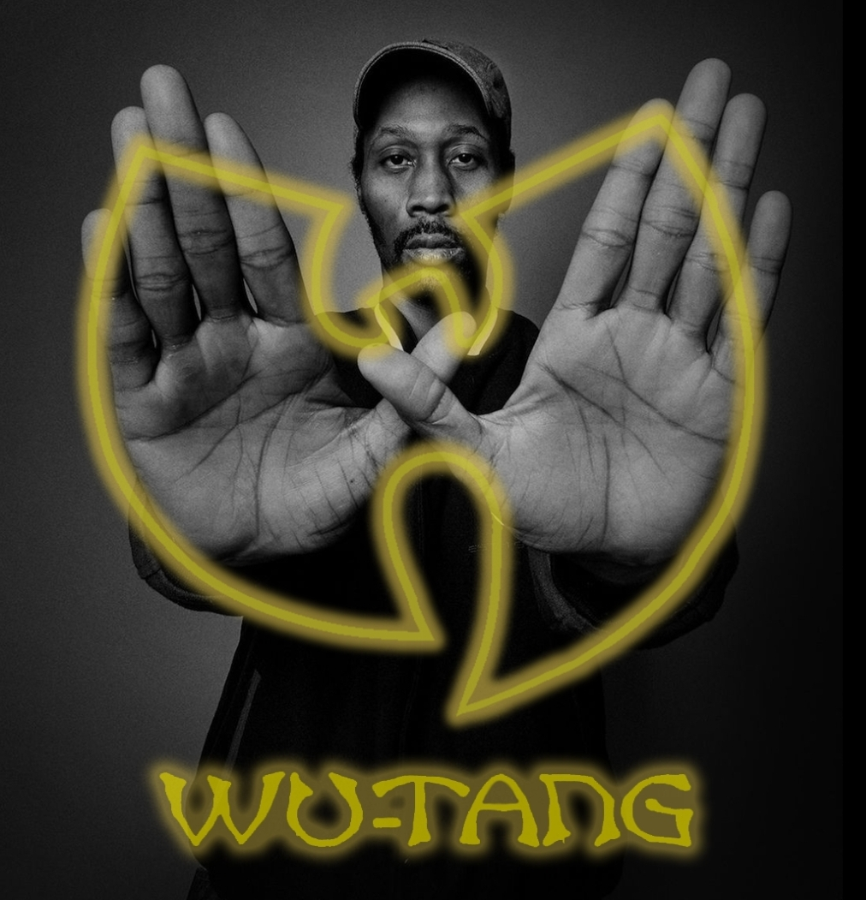

RZA

This picture is some abstract art I did. I placed triangles on top and under each other in this composition. This artwork was inspired by artist Piet Mondrian, an artist famous for Composition II with Red, Blue and Yellow, currently being displayed at Kunsthaus Zürich.
This piece of writing is about the first photo I made and put on the website, named Madvillain. The artwork is a version of the Madvillainy album cover I made myself. The cover is a photo of MF DOOM wearing his iconic mask This album was made on March 23rd, 2004 by Madvillain. Madvillain is a duo made of MF DOOM, easily one of the greatest of all time, and Madlib, a master of production. With MF DOOM delivering most of the vocal performances, and Madlib producing the entire album, it was bound to be amazing. And this album is nothing short of a masterpiece. Everything is incredible. The vocals, the flows, the rhyme schemes, the instrumentals, the production, the samples, song arrangement, everything is great.